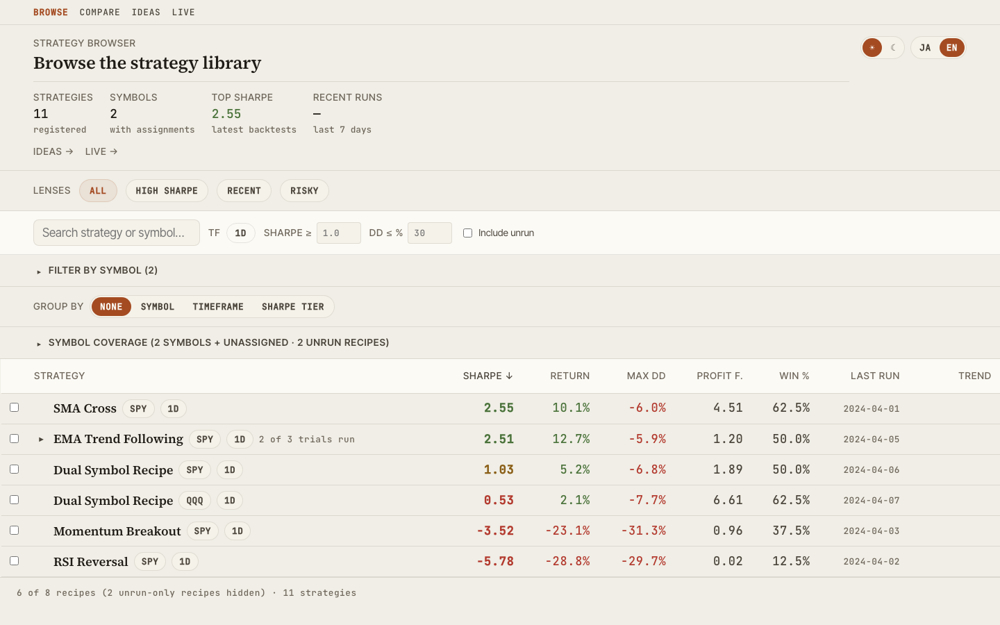
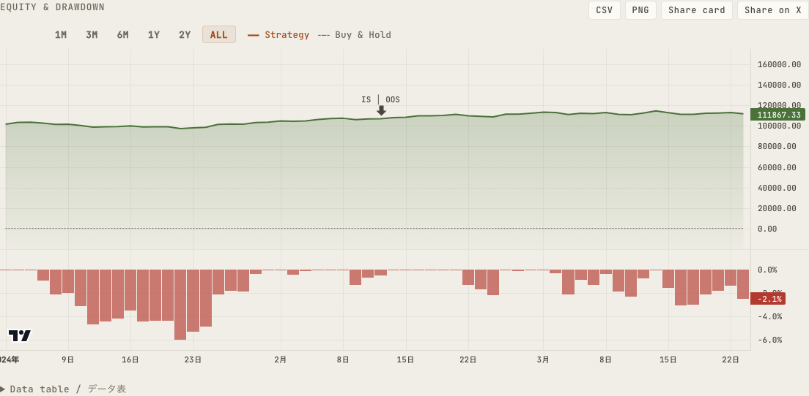
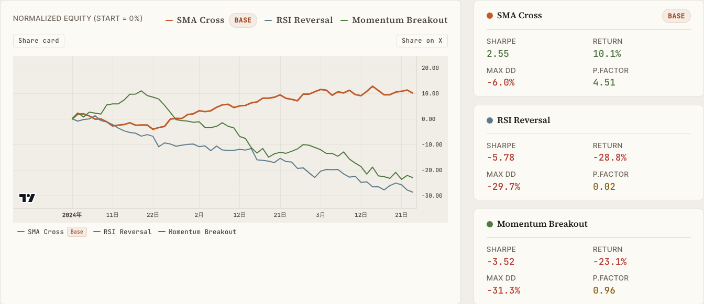
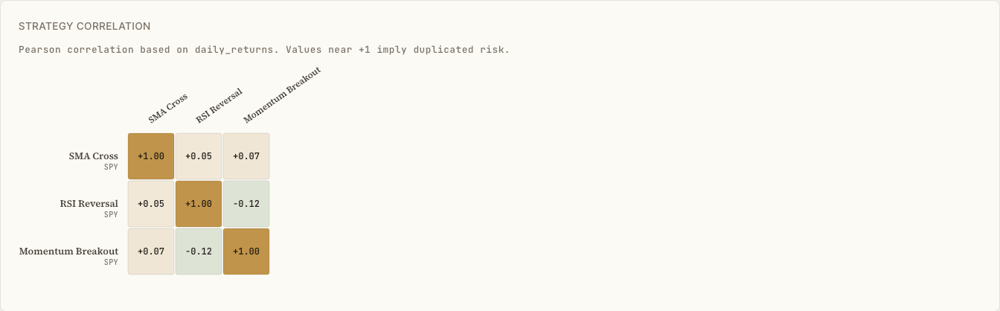
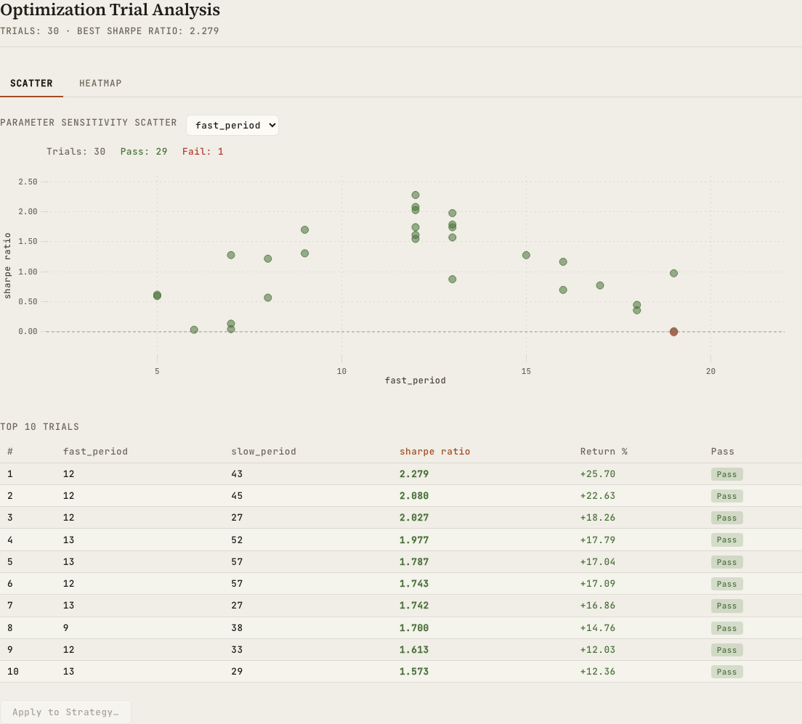
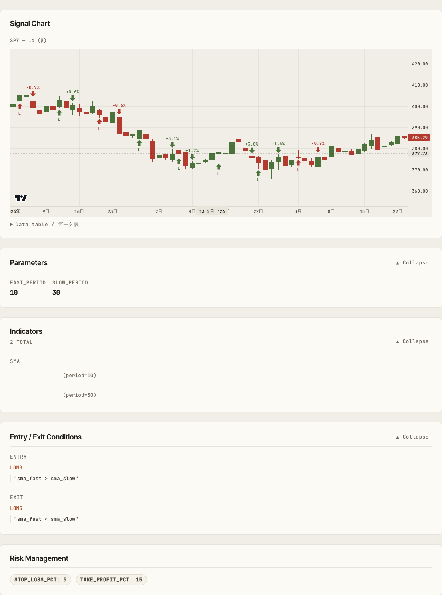
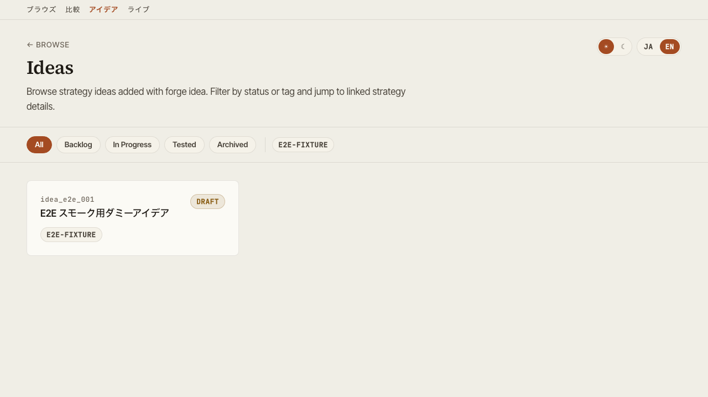

Features¶
Walkthrough of each dashboard screen served by alpha-vis serve.
Browse¶
Strategy library with search. Includes the Symbol Atlas grouped by asset class, Saved Views (preset filters), and a groupable Strategy Ledger.

Key actions:
- Filter by symbol / timeframe / Sharpe tier
- Save your favorite filter combinations as Saved Views
- Open the global command palette with
Cmd+K/Ctrl+K - Click a row to expand the slide panel, or jump to Detail
selectedId and compareIds are synchronized to URL query parameters, so a particular selection state can be shared via URL.
Detail¶
Multi-faceted view of a single strategy's backtest.

Tabs:
| Tab | Contents |
|---|---|
| Backtest | Equity / Drawdown / Underwater / trade list / benchmark metrics (alpha, beta, IR, correlation) / annual returns. Carry-adjusted metrics recorded with alpha-forge backtest run --carry are shown as a dedicated card |
| IS / OOS | In-Sample vs Out-of-Sample metric comparison |
| WFO | Walk-Forward composite equity and per-window results. Also renders WFT runs optimized on metrics other than sharpe |
| Optimize | Grid optimization heatmaps and parameter-vs-metric scatter plots |
| Run History | List of past backtest runs. Tuning trial runs launched from the GUI are visually distinguished from regular runs |
| Strategy | Indicators, entry/exit rules, and risk management as structured tree, plus the parameter tuning panel |
Running from the GUI and parameter tuning¶
alpha-visualizer does more than display results: backtests, optimization, and Walk-Forward Tests can be executed from the browser. GUI-launched backtests have been available for a while; v0.9.0 adds asynchronous optimization / WFT jobs and the parameter tuning loop, closing the whole strategy-development loop inside the GUI. This requires the AlphaForge CLI on the same machine as the server (without the CLI, the dashboard keeps working as a read-only viewer).
Running backtests / optimization / WFT¶
- Re-run a backtest from the Detail screen with one click (the log tail and the new run appear immediately)
- Optimization (Optuna) and Walk-Forward Tests launch as asynchronous jobs with real-time log / progress streaming over SSE. Running jobs can be cancelled
- WFT jobs run with recording enabled (
--save), so finished runs automatically appear in the WFO tab - Concurrency and timeout are configurable via the
ALPHA_VIS_JOB_CONCURRENCY/ALPHA_VIS_JOB_TIMEOUTenvironment variables (see Configuration)
Parameter tuning loop¶
The tuning panel on the Strategy tab supports an edit → trial run → compare → explicit save loop entirely in the GUI.
- Edit parameters and launch a trial run (the original strategy definition is untouched — the run uses a temporary strategy file)
- Compare the trial against existing backtest results side by side
- Only when you are happy, press "Save" to write the parameters back to the strategy definition (explicit action only — nothing is written back automatically)
Tuning trial runs are visually distinguished from regular runs in Browse, Run History, and the Backtest tab, so exploration footprints never mix with adopted results.
Duplicate-based strategy creation¶
Clone an existing strategy under a new ID and register it as a new strategy — useful for iterating on parameters and rules while keeping the original as a template (conflicting IDs are rejected).
Compare¶
Side-by-side view of multiple strategies.


- Parallel metric cards (CAGR / Sharpe / Sortino / MaxDD / Profit Factor, etc.)
- Overlaid equity curves
- Pearson correlation heatmap (normalized to overlapping period)
Optimize¶
Visualize optimization results.

- Scatter plot (parameter vs. metric) and a two-parameter × metric heatmap, switchable via tabs (pick the X/Y parameters and the target metric; cell color = mean metric value for that parameter combination, hover shows the parameter pair, mean, and trial count)
- Walk-Forward Test composite equity curve
- Per-window performance trajectory
Strategy structure¶
Visualize the structure of a strategy JSON.

- Indicators and their parameters
- Entry / exit conditions
- Risk management (stop logic, position sizing)
- Target symbols and timeframe
Live¶
Browse live / paper trading records and compare them against backtests. Accessible at /live, or via the "Live →" link in the Browse header.
- Lists every entry with live records (both per-strategy and combine portfolios)
- The selected entry is synced to the URL query (
?id=) for sharing
Per-strategy (trade-based)¶
Total trades, win rate, profit factor, max drawdown, and net PnL, compared with the period-aligned backtest with diffs.
Combine portfolios (position-based)¶
Shown in four blocks, in the order an investor actually reads them — how much is it worth, is it beating the market, how did it get there, and what's actually held.
| Block | Contents |
|---|---|
| KPI row | Current Value (+ day change) / Total P&L (amount & %) / Current DD (+ days since peak) / Period / Excess vs Index / Excess vs Backtest. The two excess-return figures only appear when the matching comparison series is available |
| Equity + drawdown chart | Reuses the same TradingView chart from the Detail page, overlaying up to two comparison lines — an index bought-and-held over the same period, and the backtest combine — present only when alpha-forge live replay was run with --benchmark / --compare (live-only otherwise). Includes range toggles (1M/3M/6M/1Y/2Y/ALL) and an accessible data table |
| Metrics cards (existing) | Total return / CAGR / Sharpe ratio / max drawdown / volatility, each compared against the period-aligned backtest |
| Holdings table | Ticker / Qty / Avg cost / Last / Value / Weight / Unrealized P&L, plus Positions Subtotal / Cash / Total rows. These are reconstructed from event logs, not queried live from the broker — the UI states this explicitly |
Live records appear automatically once the event log recorded by alpha-strike (the OSS webhook execution server) is imported into backtest_results.db via the AlphaForge CLI (alpha-forge live sync-events → live import-events / live replay). See the alpha-strike setup guide for the full import procedure.
Combine portfolio missing from the list on an old database
benchmark_equity / backtest_equity / positions / cash / total_value were added as later column migrations. On a database that hasn't had live replay run against it since upgrading alpha-forge, the corresponding combine portfolio can vanish entirely from the /live list. Running alpha-forge live replay once adds the missing columns, after which it shows up as usual.
Ideas¶
Browse exploration ideas and their state.

- Filter by status (pending / exploring / promoted / archived, etc.)
- Filter by tag
- Linked strategies tie ideas to their implementations
Cross-cutting features¶
Global search (Cmd+K)¶
Cmd+K (macOS) / Ctrl+K (Windows / Linux) opens a command palette from any screen, letting you jump by strategy name or screen name.
Theme toggle¶
Top-right toggle switches between dark and light. Preference is stored in browser localStorage.
Language toggle¶
Switch UI between Japanese and English — useful for screenshots or sharing with international teammates.
Export¶
- CSV — download trade history / metric tables from any panel
- PNG — save charts as static images
- Share card — export an OGP-sized (1200×630) PNG card from the Detail, Compare, and Live screens, combining the equity curve with the headline metrics — ready to post on X and other social media
- Share on X — one click saves the share card and opens the X post composer with a pre-filled performance summary (attach the saved image in the composer)
- URL share — Browse / Compare selection state is synced to query string, so copying the URL shares the view